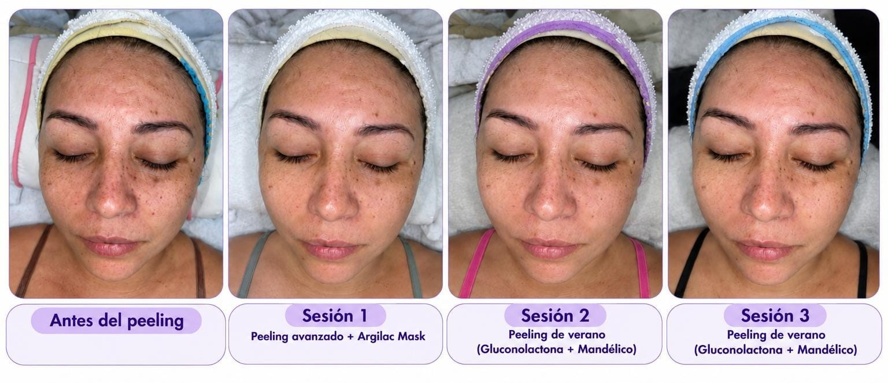
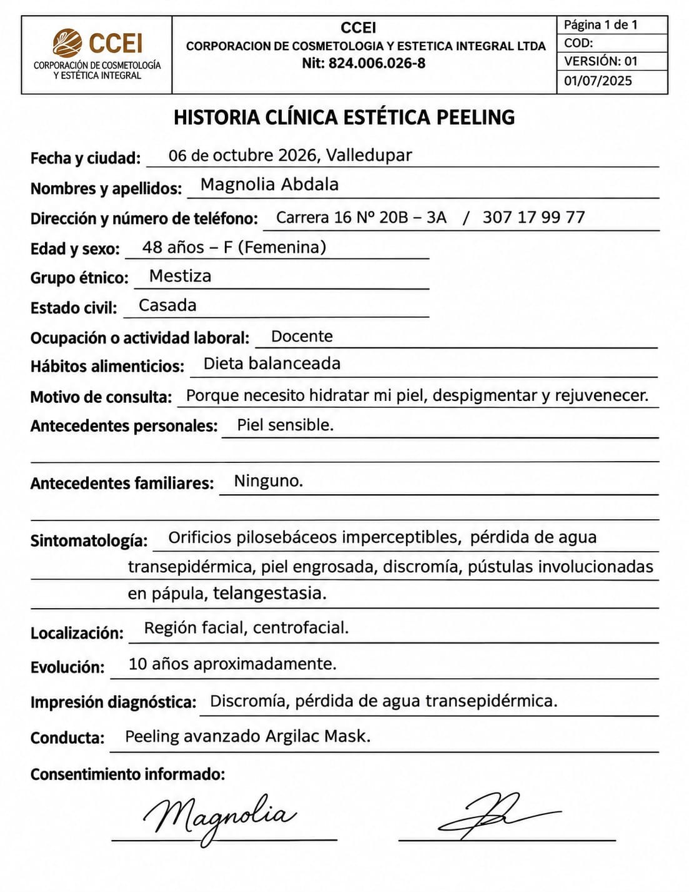
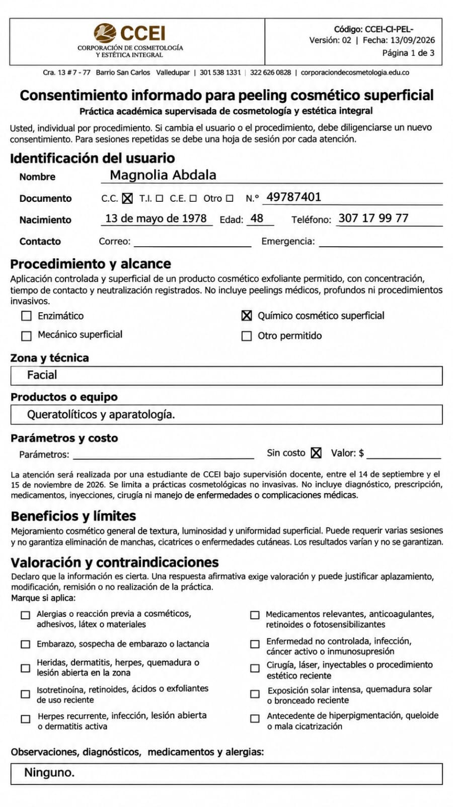
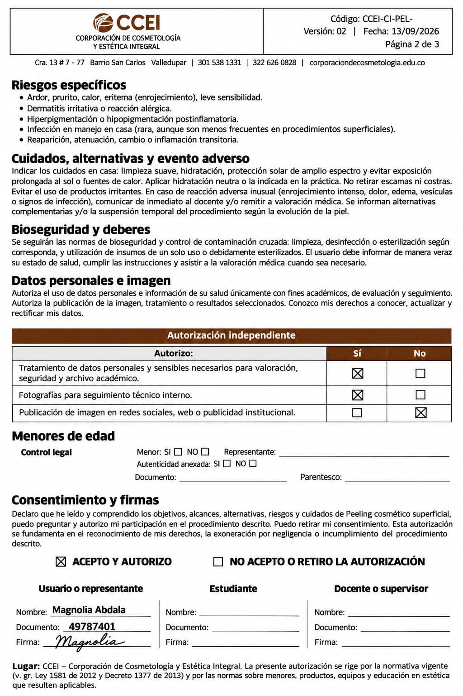
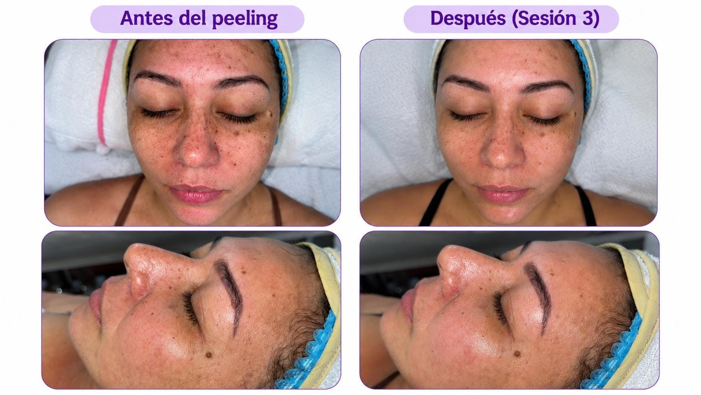

Procedimiento
Aplicación controlada y superficial de un producto cosmético exfoliante permitido, con concentración, tiempo de contacto y neutralización registrados. No incluye peelings médicos, profundos ni procedimientos invasivos.
DOS PROTOCOLOS · TRES CONTROLES
Protocolos de peeling y evolución clínica
Explorar la presentación
PROTOCOLO 01
Procedimiento realizado únicamente por personal capacitado, siguiendo normas de bioseguridad y valoración previa de la piel.
PROTOCOLO 02
Protocolo de formación profesional. El peeling avanzado debe ser aplicado únicamente por personal capacitado, siguiendo la valoración estética y las normas de bioseguridad.
ALCANCE Y SEGURIDAD
Contenido del consentimiento informado para peeling cosmético superficial.
Aplicación controlada y superficial de un producto cosmético exfoliante permitido, con concentración, tiempo de contacto y neutralización registrados. No incluye peelings médicos, profundos ni procedimientos invasivos.
Mejoramiento cosmético general de textura, luminosidad y uniformidad superficial. Puede requerir varias sesiones y no garantiza eliminación de manchas, cicatrices o enfermedades cutáneas. Los resultados varían y no se garantizan.
VALORACIÓN Y CONTRAINDICACIONES
Una respuesta afirmativa exige valoración y puede justificar aplazamiento, modificación, remisión o no realización del procedimiento.
RIESGOS ESPECÍFICOS
CUIDADOS Y EVENTO ADVERSO
HISTORIA CLÍNICA Y CONSENTIMIENTO
Copia para presentación académica interna. El consentimiento incluido marca «No» para publicación de imagen en redes sociales, web o publicidad institucional. Selecciona una imagen para ampliarla.



SEGUIMIENTO CLÍNICO
«Porque necesito hidratar mi piel, despigmentar y rejuvenecer.»
Piel sensible. Antecedentes familiares: ninguno. Orificios pilosebáceos imperceptibles, pérdida de agua transepidérmica, piel engrosada, discromía, pústulas involucionadas en pápula, telangiectasia.
Región facial, centrofacial. Evolución: 10 años aproximadamente.
Discromía, pérdida de agua transepidérmica. Peeling avanzado Argilac Mask.

ANTES → SESIÓN 3